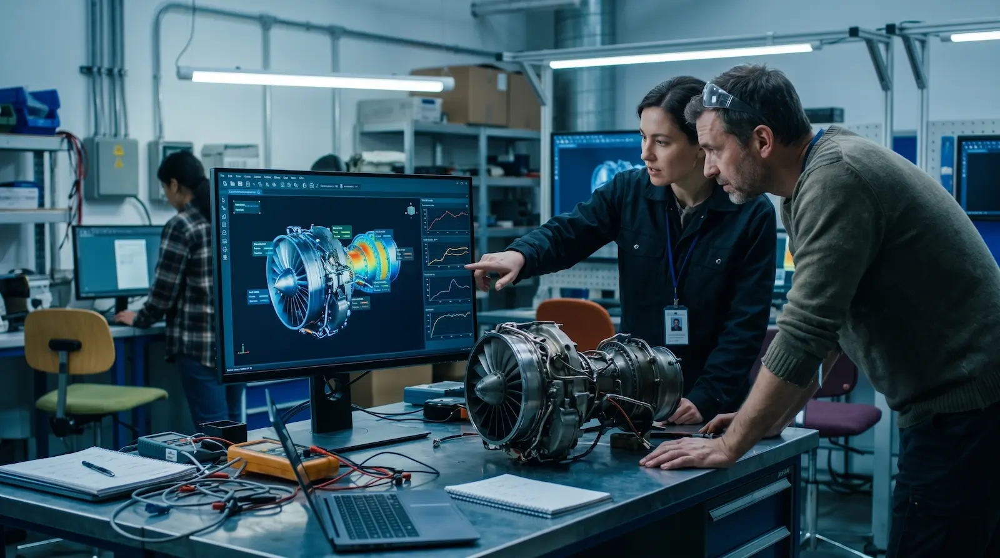

Physical Asset
The machines, benches, sensors, and people at the Automation and Electronics Laboratory.
Digital twin · Automation & Electronics Lab
The lab runs dozens of projects every year. A digital twin gives students a working model of the equipment, so they can test a design before they build it — and mistakes cost time in the model, not in the lab.

01 - CONCEPT
A digital twin is a virtual representation of a physical object or system that uses real-time data to accurately reflect the behavior, performance, and conditions of its real-world counterpart. Digital twins enable the continuous monitoring, simulation, and analysis of an object, product, or system throughout its lifecycle—from design and production to maintenance and decommissioning. They can also incorporate external processes and critical variables that affect an asset’s performance.
It is a geometric or visual representation of an object, space, or structure in three dimensions (X, Y, and Z axes). It is the model used in the lab for various purposes, such as 3D printing or modifying a design.
It is a graphical interface that displays metrics, key performance indicators (KPIs) and statistics in real time, through charts and tables. It cannot answer “what happens if…?”.
It is a dynamic virtual replica of a physical object, system or process. It connects geometry, live data and behaviour, so it can answer “what happens if…?” before anyone touches the equipment.
The machines, benches, sensors, and people at the Automation and Electronics Laboratory.
Geometry, physics, and operating rules that behave like the actual equipment
PLCs, IoT nodes, and session logs that transmit status and usage data at 1–10 Hz.
Predictions and simulations that are fed back into the laboratory in the form of maintenance, planning, or teaching decisions.
02 - IMPACT
For a teaching lab, the value is not the 3D view. It is recovered bench time, failures that never happen and lessons students can replay.
Projected impact for a first-year pilot.
Based on the constant monitoring of equipment to detect anomalies using algorithms to predict failures before they occur.
Simulation in a virtual environment can directly lead to cost and time savings, resulting in greater efficiency and quality. Avoiding costly failures and optimizing processes also contributes to cost savings.
Through simulation, the lab can identify environmental impacts, inefficient equipment or waste, and optimize the use of resources.
Before a new bench or layout is installed, the twin can test it: space, power, airflow and workflow, without moving a single machine.
Students inject a jam, a sensor failure or an emergency stop and diagnose it in the model, without risking the equipment.
Students work with the same stack used in Industry 4.0 plants: OPC UA, MQTT and digital twins.
03 - LIVE PREVIEW
Orbit the room, open an asset and watch its condition change. The panel shows the same variables a real twin would read from the PLC.
The model is not connected to physical equipment. All telemetry is simulated.
04 - THE STACK
No proprietary lock-in: the pilot starts with one bench and grows one asset at a time.
Current clamps, vibration sensors and temperature probes, plus the tags the PLC already exposes.
An industrial gateway samples at 1–10 Hz and publishes a time-stamped stream over MQTT or OPC UA.
The model ingests telemetry, runs its behaviour rules and updates the state of every asset.
Dashboards, alerts, maintenance schedules and classroom exercises consume the result.
05 - THE PLAN
A full lab twin is a programme, not a purchase. Three phases, each useful on its own.
Weeks 1–6. Add 8–12 sensors to the robot cell and publish the tags the PLC already knows. Output: one live data stream.
Weeks 7–16. Model the geometry, encode the operating states and connect this dashboard to real data. Output: a connected twin.
Months 5–9. Train simple failure models on the collected history and turn them into course material. Output: a predictive lab.
06 - TAKEAWAY
Every cable, sensor and session in the laboratory produces a signal. A digital twin turns those signals into understanding — for the people who maintain the lab and for the students who learn inside it.
Replay the twin